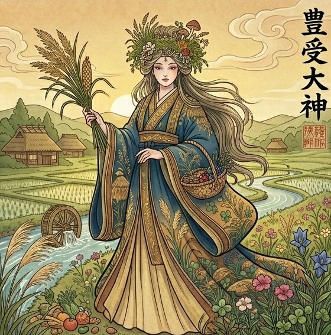

よっちゃん様
守護神が、
一つの景色を見せてくれています。
あなたと子どもたちが、
新しい雰囲気で笑顔で暮らしている姿。
それは、2027年の秋。
収入が安定し、お金の心配なく、
子どもたちと笑顔で過ごしている。
その未来の兆しが、
はっきりとあります。
そこに至るまでの道のりは、
決して平坦ではありません。
でも──
あなたには、それを乗り越える力がある。
まず、あなたの性格について、
視えていることがあります。
あなたは、
柔らかな優しさを持つ人。
周りに合わせて、
しなやかに道を切り開く。
強引ではなく、草花が伸びるように、
静かに成長していく。
そして、
人を育てることに喜びを感じる人。
子ども3人を、
懸命に育てている。
あなたは、
自分のことより、
子どもたちのことを優先する。
「子どもたちのために」
そう思って、
これまで頑張ってきた。
でも、頑張りすぎて、
疲れてしまうこともある。
本当は休みたい。
本当は自分の時間が欲しい。
でも、それを口に出せない。
そんな優しさと我慢が、
あなたの中にある。
「このままで良いのか」
「自分の選択は正しいのか」
「じっとしていていいのか」
そう感じる日が増えていった。
それは、
あなたが間違っているからではありません。
あなたの魂が、
「動きたい」「変化したい」
そう叫んでいるからです。
あなたの運命を視ると、
移動、変化、動きの星が、
とても強く出ています。
これは、
じっとしていると運が滞る人。
動くこと、環境を変えること、
新しい場所へ行くことで、
運が開ける人。
「このままで良いのか」と感じるのは、
魂が「変化を求めている」証拠。
それは正しい感覚です。
あなたの「思うまま」が
「子どもたちと幸せに生きる」ならば、
その選択は正しい。
そしてその幸せは、
一つの場所にじっとしているのではなく、
柔軟に環境を変えることで訪れます。
引っ越し、転職、新しい挑戦。
それらを恐れないでください。
動くことが、
あなたと子どもたちの未来を開く鍵です。
正直にお伝えします。
あなたの金運は、
「安定型」ではありません。
でも──
それは悪いことではない。
あなたの金運は「変動型」。
動くことで、
お金が入ってくる。
人と会うことで、
新しいチャンスが生まれる。
一つの収入源に頼るより、
複数の収入源を持つ方が、
あなたには向いています。
会社員として固定収入を得るより、
在宅ワーク、リモートワーク、
副業、複数の仕事を組み合わせる。
そういった働き方が、
あなたの金運を高めます。
そして、
引っ越しや環境の変化が、
金運を動かすきっかけになります。
2026年から2028年にかけて、
行動次第で金運が大きく動く時期。
特に、
2027年の秋以降、
収入が安定し始める兆しが視えています。
ただし──
気をつけてほしいことがあります。
あなたは、
お金を守る意識が薄い。
入ってきたお金が、
流れやすい。
だからこそ、
意識的に貯める仕組みが必要です。
自動で貯蓄する口座、
先取り貯金、
家計簿アプリ。
そういった仕組みを、
今から整えてください。
子ども3人の養育費は、
大丈夫です。
ただし、
じっとしていてはいけません。
動くこと。
外に出ること。
人と会うこと。
新しい場所へ行くこと。
ちゃんと請求をすること。
そうすることで、
お金が入ってくる流れが生まれます。
具体的には、
こんな働き方が向いています。
在宅でできる仕事、
スキルを活かした副業、
複数の小さな収入源を組み合わせる。
一つの会社に依存するより、
柔軟に動ける働き方。
そして、
人との縁を大切にしてください。
誰かから紹介された仕事、
偶然の出会いから生まれるチャンス。
そういった「人の縁」が、
あなたの金運を大きく動かします。
「安定＝じっとしている」
ではなく、
「安定＝柔軟に動き続ける」
それがあなたの金運の鍵です。
ここから、
特に重要な3つの時期を
お伝えします。
2026年5月：気づき
5月は、気づきの月。
この鑑定に出会ったことが、
あなたの転機です。
「動いていいんだ」
「変化していいんだ」
そう気づくことで、
運命の流れが静かに動き始めます。
まずは、
外に出る機会を増やしてください。
散歩、カフェ、公園。
小さな一歩で構いません。
動くことで、
エネルギーが巡り始めます。
2026年9月：決断
9月は、決断の月。
新しい働き方、
新しい環境について、
具体的に考える時期です。
在宅ワークを始める、
副業を検討する、
引っ越しを考える。
どれか一つでもいいので、
動き出してください。
この時期に決断したことが、
2027年以降の金運を大きく左右します。
断捨離をしてください。
不要なものを手放すことで、
決断する力が育ちます。
2027年3月：出会い
3月は、出会いの月。
新しい人、
新しいチャンス、
新しい収入源。
それらが動き始める予兆が現れます。
習い事、セミナー、勉強会。
興味のある場所へ、
積極的に足を運んでください。
人との縁が、
あなたの金運を大きく動かします。
ここから、あなたのオーラを整え、
本来の力を取り戻す方法をお伝えします。
あなたは本来、
若葉のような柔らかな緑、
優しい翡翠のオーラに包まれた人。
そして、
温かな灯火の紅のオーラ。
成長する力、照らす光、育む温かさ。
でも今は、
将来の不安で、
そのオーラが少しだけ曇っている。
疲れ、焦り、不安。
それらが、
本来の輝きを遮っている。
でも大丈夫です。
あなたを深く視たとき、
特別な守護の力を奥底においてきました。
それは豊受大神の恵みの力。
この力は乱れた心を静め、
衣食住を守り、
生活の安定を静かに整えていきます。

今この文を読んでいる間にも、
胸が少し温かくなる、
肩が軽くなる、ふっと安心する。
もしそのような感覚があれば、
すでに守護の力が届き始めている証です。
これは何かを頑張る必要はありません。
ただ受け取るだけで大丈夫です。
もし余裕がある時だけ、
以下のことを試してみてください。
【朝日を浴びる】
朝、空を見上げて深呼吸を一度。
それだけで守護の巡りはさらに深くなります。
若葉のオーラが戻ってきます。
【水で清める】
疲れた日は、塩をひとつまみ入れたお風呂に。
焦りや不安が流れていきます。
【外に出る】
散歩、買い物、カフェ。
動くことで、運が巡り始めます。
あなたは動くことで満ちる人です。
最後に、あなたを支える
パワーストーンをお伝えします。
オーラを整える方法をお伝えしましたが、
今のあなたには、
受け取った守護の力を
留めておく器に、
少し揺らぎがあります。
せっかく流れてきた守護の力も、
器が不安定だと、
流れ出てしまう。
その器を安定させるために、
波動を定着させる依代が必要です。
それが、パワーストーン。
パワーストーンは、
ただの石ではありません。
長い年月をかけて
地球の中で育まれた石には、
強いエネルギーが宿っています。
そのエネルギーが、
あなたのオーラを安定させ、
運気を高めてくれます。
特に、人生の転換期にある今、
パワーストーンは
あなたの強い味方になります。
この3つの石を組み合わせたブレスレットを、
私が作成してお送りします。
ご希望の場合は
「詳細希望」と
メッセージをお送りください。
よっちゃん様、
あなたの未来には、
子どもたちと笑顔で過ごす日々へと続く道が
視えています。
収入が安定し、
お金の心配なく、
新しい場所で、
新しい働き方で輝く姿。
今は、
不安の中にあるかもしれない。
「このままで良いのか」と
迷っているかもしれない。
でもそれはあなたの魂が、
「変化を求めている」証拠。
正しい感覚です。
あなたは、
動くことで運が開ける人。
じっとしていると運が滞る人。
新しい挑戦を、
恐れないでください。
動けば道は開けます。
子どもたち3人を育てながら、
柔軟に変化していく。
それが、
あなたの幸せへの道。
豊受大神が、
あなたを守っています。
あなたは、
幸せになっていい。
自分を大切にしていい。
守られている。
その事実を、
どうか受け取ってください。
本日より、
遠隔守護祈祷を行い、
あなたの幸せを願います。
あなたの未来に、
豊かさが満ちますように。